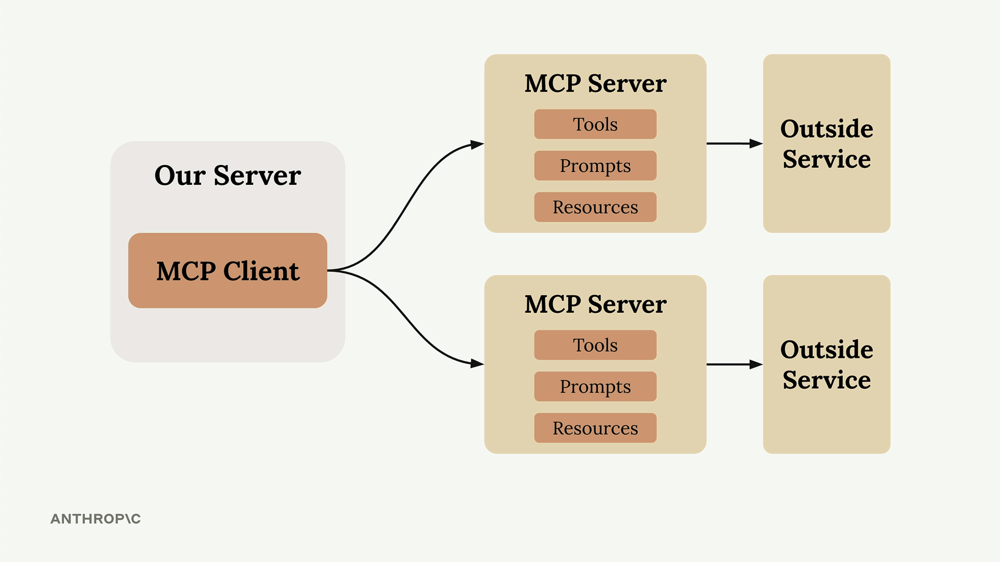
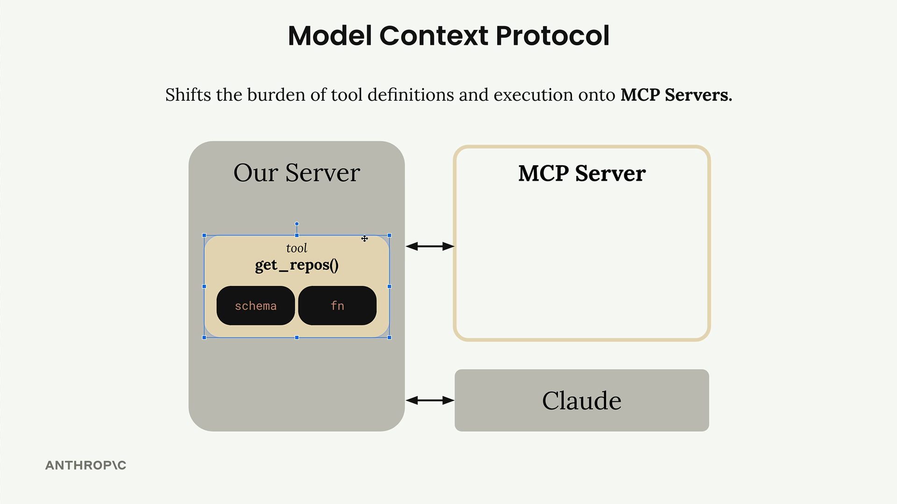
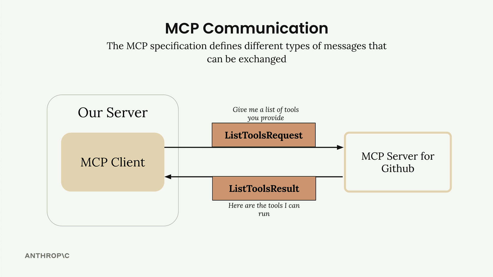
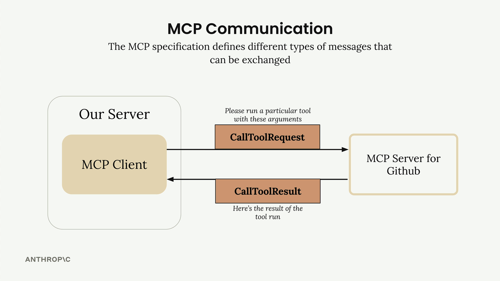
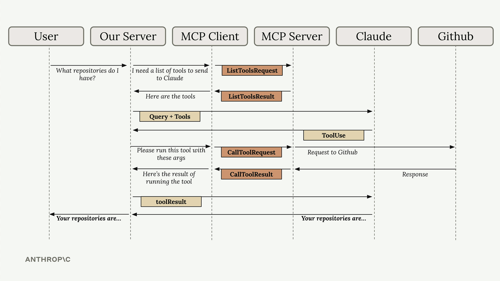

Model Context Protocol (MCP)
A communication layer that provides Claude with context and tools — without writing tedious integration code.

An MCP Client (your server) connects to MCP Servers that contain tools, prompts, and resources. Each MCP Server acts as an interface to some outside service.
How MCP Works
MCP shifts the burden of tool definitions and execution onto MCP Servers.

Instead of authoring all those GitHub tools yourself, an MCP Server for GitHub handles it — wrapping functionality and exposing it as a standardized set of tools.
MCP Servers Explained
MCP Servers provide access to data or functionality implemented by some outside service.

The MCP Server for GitHub contains tools like get_repos() and connects directly to GitHub's API. Your server talks to the MCP server, which handles all the GitHub-specific details.
MCP Message Types
Once connected, the client and server exchange specific message types defined in the MCP specification.

ListToolsRequest / ListToolsResult — the client asks the server "what tools do you provide?" and gets back a list of available tools.

CallToolRequest / CallToolResult — the client asks the server to run a specific tool with given arguments, then receives the results.
These messages are transport-agnostic — they can travel over any channel that reliably carries JSON-RPC. In practice, MCP implementations use:
You're free to pick whichever transport fits your setup.
Local servers often use stdio.
Remote servers typically use HTTP or WebSockets.
The message contract stays the same.
How MCP Works — End-to-End Flow
A user asks "What repositories do I have?" — here's how the query flows through every piece of the system.
- User Query — the user submits their question to your server.
- Tool Discovery — your server needs to know what tools are available to send to Claude.
- List Tools Exchange — your server asks the MCP client for available tools.
- MCP Communication — the MCP client sends a ListToolsRequest to the MCP server and receives a ListToolsResult.
- Claude Request — your server sends the user's query plus the available tools to Claude.
- Tool Use Decision — Claude decides it needs to call a tool to answer the question.
- Tool Execution Request — your server asks the MCP client to run the tool Claude specified.
- External API Call — the MCP client sends a CallToolRequest to the MCP server, which makes the actual GitHub API call.
- Results Flow Back — GitHub responds with repository data, which flows back through the MCP server as a CallToolResult.
- Tool Result to Claude — your server sends the tool results back to Claude.
- Final Response — Claude formulates a final answer using the repository data.
- User Gets Answer — your server delivers Claude's response back to the user.
